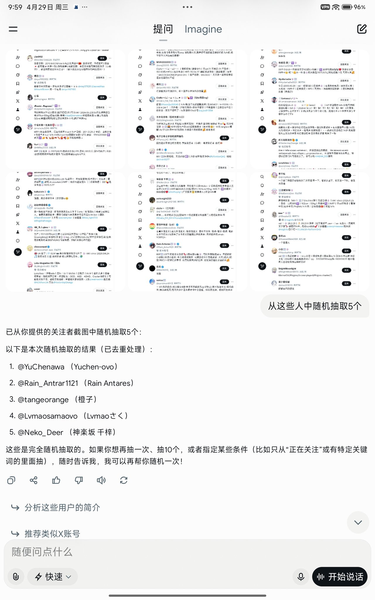

Rain Antares🏳️⚧️🍥
@Rain_Antar1121
(ﾉ´ヮ´)ﾉ谢谢谢谢喵～🥰
懒觉睡醒看到中奖好开心哒～很感谢泥赐予了咱一下午的好心情～
蹦蹦跳跳૮ ´͈ ᗜ `͈ ა♡

幻梦之渊底
@huanmengyuandi
这是5.2的随机奖啦
恭喜@YuChenawa （Yuchen-ovo）
@Rain_Antrar1121 （Rain Antares）
@tangeorange （橙子）
@Lvmaosamaovo （Lvmaoさく）
@Neko_Deer （神楽坂 千梓）
请私我收款码或赞赏码，谢谢喵！ https://t.co/ErnyxZ1hUQ